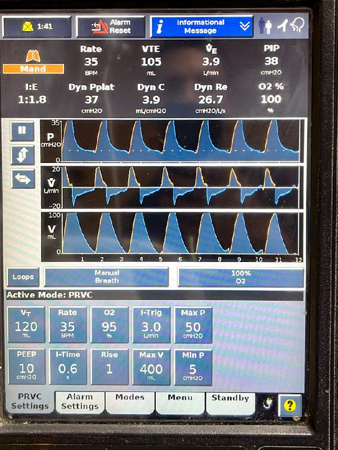
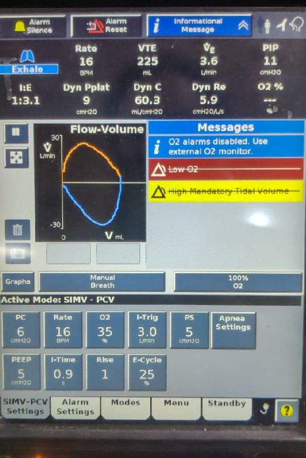
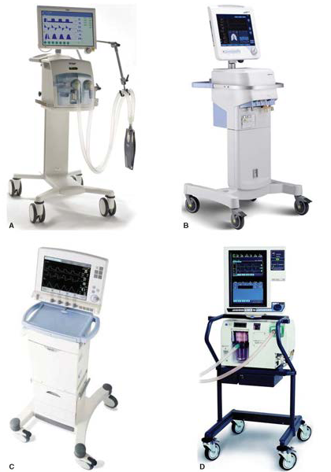
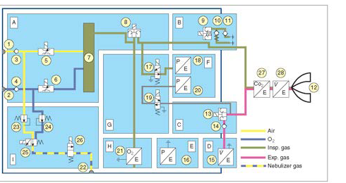
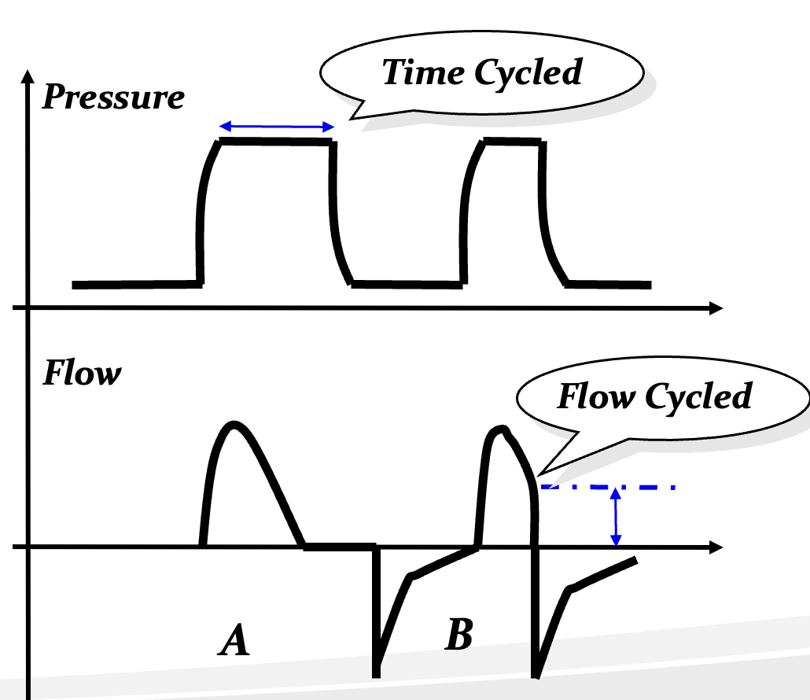
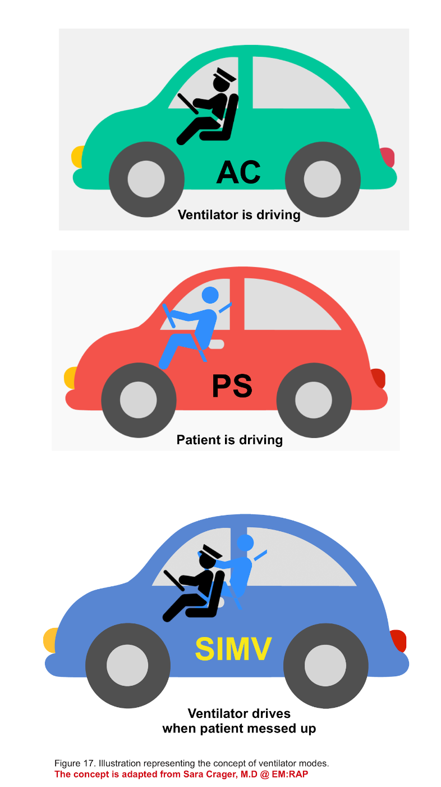
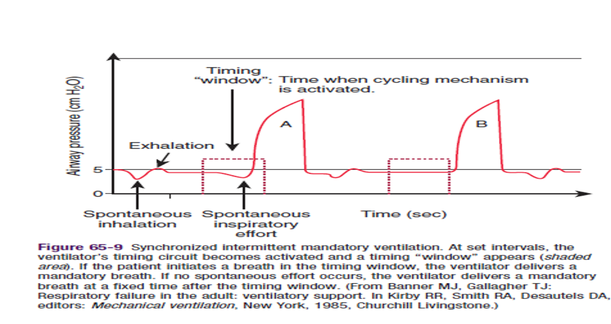
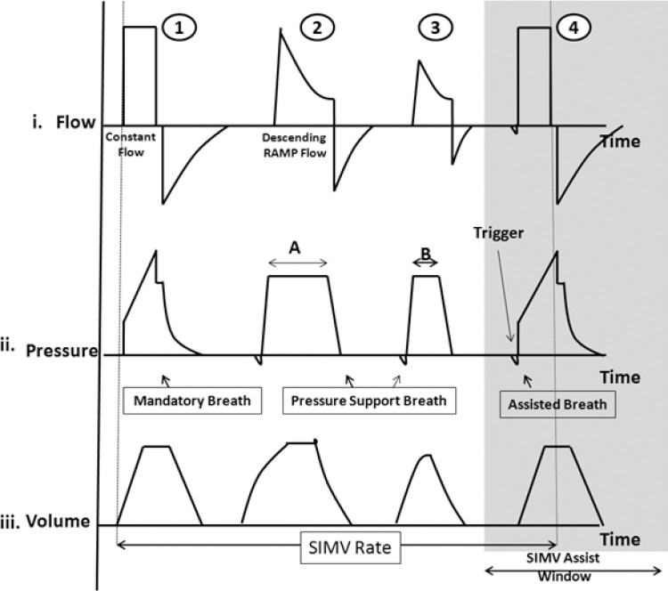
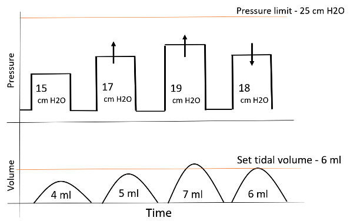

Indications, physiology, modes and the first settings.
Dr Manju KedarnathSenior consultant and clinical lead · Pediatrics, Peds ER and PICUKIMS Hospitals, Electronic City, Bangalore
Dr Manju Kedarnath
Senior consultant and clinical lead · Pediatrics, Peds ER and PICUKIMS Hospitals, Electronic City, Bangalore
“Envisage to be better than you were yesterday, even in a small way.”
Academic achievements
MD Paediatrics, gold medallist · Govt Medical College, Surat
Fellowship in Paediatric Emergency and Critical Care · JIPMER
PICU fellowship, liver transplant · King’s College Hospital, London
Cardiac ICU fellowship · GOSH, London
PCCM fellowship · SickKids, Toronto
Affiliations
Médecins Sans Frontières · Love Without Reasons Foundation
IAP Intensive Care Chapter · teacher
IAP STEP-IN team member · training PICU nurses
PediSTARS · joint secretary
Indian Society of Critical Care Medicine
Beyond the PICU
Trained in Bharatanatyam; contemporary dance is a passion
Travel and photography: 25 countries and counting
Avid hiker, speaker, and proud parent of lots of cats
Know the physiology, the machine, the patient
Three objectives
Physiology: two jobs, C, R, TC, pressures, PEEP, MV
Machine: parts of a breath, modes, flows, graphs
Each mode: safety, comfort, liberation
Patient: restrictive, obstructive, poor pump
Part 1 · Know the physiology
Why we breathe
Two jobs, one gradient
AlsoCO₂ diffuses about 20 times faster than O₂ — oxygen fails first
Three causes of respiratory failure
Indications
Cardiopulmonary: oxygen cannot cross
CNS or neuromuscular: the drive and pump fail
Metabolic demand outruns capacity: sepsis, shock
Trend and work of breathing beat one number
When breathing fails
Three routes
Purpose of ventilation
What you set
& want to happen
Waveforms
Explain why things happen
What is actually happening
The patient


AlsoThree goals for every mode: safety · comfort · liberation
Support, doing the least harm
Physiological goals
Buy time until the disease resolves
Restore oxygenation: ARDS
Restore ventilation: reduced CNS drive
Reduce work of breathing: asthma, CLD
Reduce metabolic demand: shock
SpO₂ 86% on a mask, PaCO₂ 38. Which job failed?
Check your understanding
3-year-old · pneumonia · 10 L maskSpO₂ 86% · PaCO₂ 38RR 50, working hard
AVentilation
BOxygenation
CBoth
DNeither: it is the mask
Two problems, two knobs
Read every gas this way
AlsoMean airway pressure rises with peak pressure, inspiratory time, rate and PEEP
Oxygenation: MAP and FiO₂
Six causes of hypoxia
PAO₂ drives gas across the membrane
Hb saturated a third of the way along
On the ventilator: mean airway pressure, FiO₂
Hypoventilation · anaemia · cardiac shunt
Airway disease · consolidation · atelectasis: V/Q
SpO₂ 86% on a mask, PaCO₂ 38. Which job failed?
Answer
3-year-old · pneumonia · 10 L maskSpO₂ 86% · PaCO₂ 38RR 50, working hard
AVentilation
BOxygenation
CBoth
DNeither: it is the mask
B. Carbon dioxide is normal, so the pump and drive are working; oxygen is not crossing. This is oxygenation failure: a lung problem, treated with PEEP and FiO₂, not with rate.
Which single change raises MAP most?
Check your understanding
PEEP 8 · PIP 25 · Ti 0.8 · rate 25MAP 13.7Raise it: which knob?
APIP 25 → 30
BPEEP 8 → 13, ΔP kept
CTi 0.8 → 1.2
DRate 25 → 35
Mean airway pressure: the area
MAP = area under the curve
Pressure control · MAP is the area under this curve
Raise PIP
Raise PEEP
Lengthen Ti · I:E
Raise FiO₂
How to calculate MAP
Square wave · pressure control
MAP = PEEP + (PIP − PEEP) × Ti ÷ Ttot
Example: PEEP 8, PIP 25, Ti 0.8
Rate 25: cycle 2.4 s, Ti ⅓
MAP = 8 + 17 × ⅓ = 13.7
Area under the curve ÷ cycle time
Each component raises the area
Same baseline · one change at a time
01PIP: area only during Ti
02PEEP: area across the whole cycle
03Ti: a wider block
04Rate: more blocks
PEEP contributes the most
The biggest lever
PEEP is present 100% of the cycle
PIP only Ti ÷ Ttot of it
+5 PEEP: +5 MAP · +5 PIP: +1.7
PEEP recruits; PIP overdistends
All of them cost venous return
Which single change raises MAP most?
Answer
PEEP 8 · PIP 25 · Ti 0.8 · rate 25MAP 13.7Raise it: which knob?
APIP 25 → 30
BPEEP 8 → 13, ΔP kept
CTi 0.8 → 1.2
DRate 25 → 35
B. PEEP acts for the whole cycle, so +5 PEEP is +5 MAP; PIP acts only during Ti, a third of the cycle, so +5 PIP is +1.7.
The one equation
Pvent + Pmus=E·V+R·V
AlsoWhen the child pulls harder (Pmus ↑), adaptive modes give less (Pvent ↓)
Balloon or basketball?
C = ΔV ÷ ΔP
AlsoStatic compliance uses plateau · dynamic uses peak — the gap is resistance
Radius rules
Poiseuille
AlsoSmall tube, secretions, water in the circuit — all add resistance
Time constant
TC = C × R
3 × TC
≈ 95% emptiedTime needed to fill or empty
Time constant by disease
τ = R × C · sets the I:E
Stiff lung · short τ · empties fast
Obstructed airway · long τ · still flowing
Normal lung: τ ≈ 0.3–0.5 s
ARDS: low compliance, short τ
Asthma, bronchiolitis: high resistance, long τ
I:E follows τ: ARDS 1:1.5, asthma 1:4
Flow not back to zero: trapping
Read the expiratory flow
Expiration is passive
Normal · back to zero, then a pause
Trapping · the next breath comes too soon
Recoil drives it: peaks early, decays
Must reach zero before the next breath
Still flowing: trapping, auto-PEEP
Measure with an expiratory hold
Fix: lower rate, shorter Ti, bronchodilate
Peak 40, plateau 22, PEEP 5. Where is the problem?
PIP 38 · plateau 17. The gap widened. Airway problem.
Compliance down
PIP 34 · plateau 28. Both rose. Lung problem.
Driving pressure
Safe bet ≤ 15 cmH₂O
Peak 40, plateau 22, PEEP 5. Where is the problem?
Answer
AThe lung
BThe airway
CThe chest wall
DA leak
B. Peak minus plateau is 18: resistance. Plateau minus PEEP is 17: the lung is fine. Tube, secretions or bronchospasm.
PEEP keeps the door open
Video
Video · PEEP explained
Holds alveoli open at end-expiration
Raises FRC, recruits
Prevents open–close injury
Improves oxygenation via MAP
PEEP by disease
Start, then titrate
Asthma 2–3 · pneumonia 5–6
ARDS 7–9, titrate to 12–15
Raises FRC, recruits alveoli
Protects against VILI
Eases triggering when gas is trapped
Minute ventilation
VE = RR × VT
AlsoSmaller breaths, bigger dead space share: 30% → 50%
Part 2 · Know the machine
How a breath is built
Inside the black box
One logic, many brands

Dräger · Hamilton · Maquet · Covidien

Air · oxygen · inspiratory · expiratory gas
01InputGas + power
02ControlValves · processor
03OutputP · V · flow
Meet the circuit
Dual-limb · ICU
AlsoTubing ≈ 10 mm neonatal · 15 mm paediatric · 22 mm adult · single-limb with leak port = NIV
Warm and wet
Humidification
ActiveHeated humidifierOn the inspiratory limb≈ 37 °C · 44 mg/L at the Y-pieceDefault for infants, long runs, thick secretions
PassiveHMEAt the tube · recycles the child’s own heat and waterAdds dead space and resistanceShort runs, transport
The ruleNever bothAn HME behind a heater soaks throughResistance climbs until the tube is effectively blocked
AlsoRemove the HME before nebulising, or the drug stays in the filter
We control inspiration; expiration is passive
The basic concept
Trigger: when to breathe
Limit: how much
Cycle: when to stop breathing in
Expiration: elastic recoil, not the machine
What ends this breath?
Check your understanding
ATime: the set Ti
BVolume: the set VT
CFlow falling to ~25% of peak
DThe child stopping effort
Every breath: start, deliver, stop
Breath anatomy
01
Trigger: what starts the breath. Time, or the patient.
02
Target: what is held steady during inspiration. Flow or pressure.
03
Cycle: what ends it. Volume, time, or falling flow.
Emrath 2021
Who started the breath?
Trigger
Time-triggered
Pressure rises straight from PEEP. The machine started it.
Patient-triggered
A small dip below PEEP just before the rise. The child pulled first.
Volume control: flow is set
Flow patterns
01
Flow jumps to the set value and stays flat until the volume is in.
02
During the pause, flow is zero: that is when plateau is measured.
03
Expiration is passive: a peak, then an exponential return to zero.
The inspiratory flow tells you little about the lung. Here the pressure trace does the talking.
Step-wise approach, J Pediatr Crit Care 2015 · Restrepo 2014
Pressure control: flow is the answer
Flow patterns
Pressure is square. Flow starts high and decays as the lung fills and the gradient falls.
Fast decay: stiff lung or high resistance reached the target quickly. Slow decay: a long time constant.
Same pressure, different lung, different volume. Watch VT whenever compliance changes.
Yartsev, Deranged Physiology · Flynn 2022
Time or flow cycled
Cycle

Fig. — Time-cycled (A) vs flow-cycled (B)
A · Time cycledPC: ends at the set Ti
B · Flow cycledPSV: ends when flow falls to ~25% of peak
PSVAlways patient-triggered
Same volume, different pressures
Constant vs decelerating
Constant flow · VC
Higher peak pressure, lower mean airway pressure.
Decelerating · PC
Lower peak, higher mean airway pressure. Better oxygenation in older studies; not confirmed in recent ARDS data.
Emrath, Curr Pediatr Rep 2021 · Al-Saady & Bennett, Intensive Care Med 1985;11:68–75 · Davis et al, J Trauma 1996;41:808–14 · Different inspiratory flow waveforms in ARDS, J Clin Med 2021;10:4756
What ends this breath?
Answer
ATime: the set Ti
BVolume: the set VT
CFlow falling to ~25% of peak
DThe child stopping effort
C. A pressure-support breath is flow-cycled: it ends when inspiratory flow decays to a fraction of its peak, 25% by default.
Three modes you will use
Live · the same lung
AC · volume control
AC · pressure control
Pressure support
01AC-VC: set volume, pressure is the answer
02AC-PC: set pressure, volume is the answer
03PS: child starts and ends every breath
04SIMV: mandatory, PS between
Who is driving?
Car analogy

Fig. 17 — After S. Crager, EM:RAP
ACVentilator drives · you set the rate
PSChild drives · no set rate
SIMVChild drives until they falter · you set the rate
PC-ACSet PIP and RR
The SIMV window
Synchronisation

Fig. 65-9 — Timing window · Banner & Gallagher

Fig. — Mandatory · pressure support · assisted
Four phases of a PS breath
Tobin ch 8 · Brochard
Fig. 8-1 — Four phases of a PS breath · redrawn
1 · EffortChild pulls · auto-PEEP must be overcome first
2 · Trigger delayValve opens · <100 ms on modern machines
3 · PressuriseRise time sets how fast
4 · Cycle offFlow falls to ~25% of peak · varies 5–80% by machine
AlwaysNo mandatory breaths: set apnoea backup · leak stops flow falling: set a max Ti, especially on NIV
CPAP: no machine breaths
Spontaneous mode
Elevated baseline, child breathes alone
Child sets rate, VT and Ti
PEEP for a spontaneous breath: better oxygenation
Too high: expiratory work rises
PRVC, breath by breath
Volume targeting

Fig. — Target 6 mL · PIP adjusts each breathFig. — Child pulls harder, machine gives less · redrawn
Each mode: safety, comfort, liberation
Perks and perils
Mode
Safety
Comfort
Liberation
VC
VT and MV guaranteed; PIP floats
Square flow: least comfortable awake
Poor: machine does the work
PC
PIP capped; VT falls silently
Decelerating flow: comfortable
Fair: child can add breaths
PRVC
VT target with a PIP cap
Drops pressure when child pulls hard
Fair
SIMV
Back-up rate; mixed breaths fight
Asynchrony between breath types
Prolongs weaning in trials
PS
No back-up rate: needs apnoea back-up
Best: child sets rate and VT
Best: the weaning mode
CPAP
No breaths at all
Open alveoli, own effort
The readiness test
Part 3 · Know the patient
The first settings
Never intubate and leave the room
What you must know and set
Know the disease: stiff lung, obstructed airway, normal lung
Set it yourself: mode, VT/pressure, rate, Ti, PEEP, FiO₂, trigger, alarms
Read it back: VTe, peak, plateau, waveforms, SpO₂, CO₂
Gas in 20–30 minutes; film for tube position
Sedation, analgesia, humidifier on; a plan for DOPES
Pressure support · the child triggers, the machine pushes
Supports every own breath
Set PS ≈ PC − 2
Triggered, pressure-limited, flow-cycled
Needs trigger, rise, cycle % set
Always an apnoea backup
Rise time: how fast the pressure arrives
Setting 5
Time to reach the set pressure
Too slow: flow starvation, dip, work
Too fast: overshoot, ringing, alarms
Start 0.1–0.2 s; shorter in infants
Adjust watching the pressure trace
Flow cycle %: when the breath ends
Setting 6
PS ends at a fraction of peak
Default 25%
Obstruction or leak: raise to 40–50%
Restrictive lung: lower to 10–15%
Leak: set a maximum Ti too
Expiratory flow never returns to zero. First change?
Check your understanding
ARaise PEEP
BRaise PC
CLower the rate
DShorten Ti further
Restrictive lung: small and open
ARDS · pneumonia · short time constant
PEEP 8–10, climb with FiO₂ together
VT 5–6 mL/kg · plateau ≤ 28 · ΔP ≤ 15
Rate faster: lung empties fast
Ti by age; I:E 1:1.5 is fine
Accept CO₂: pH down to 7.20
Obstructive lung: give it time
Asthma · bronchiolitis · long time constant
Rate low: 8–15 asthma, 20–25 bronchiolitis
Short Ti, long Te: I:E 1:3 or more
Expiratory flow back to zero, every breath
PEEP 3–5, below auto-PEEP · VT 6–8
Accept CO₂ · treat the airway
Normal lung: replace the pump
Coma · neuromuscular · post-operative
Lung is fine: physiological settings
VT 6–8 · rate for age · PEEP 5
FiO₂ down to 0.3–0.4 quickly
Raised ICP: PaCO₂ 35–40
Atelectasis is the enemy: sigh, turn, physio
Expiratory flow never returns to zero. First change?
Answer
ARaise PEEP
BRaise PC
CLower the rate
DShorten Ti further
C. Gas is trapped: the lung has not emptied before the next breath. Give it time: lower the rate first, then look at Ti and bronchodilation.
Three lungs, three recipes
Know the patient
Restrictive: PEEP high, VT small, rate fast
Obstructive: PEEP low, rate slow, Te long
Poor pump: physiological, fight atelectasis
All: chest, SpO₂, expiratory flow
All: a gas at 20 minutes
Gentle ventilation
Permissive targets
Permissive hypercapnia: limit the pressures
Permissive hypoxaemia: PaO₂ 55–65, SpO₂ 88–92
FiO₂ below 0.6, PEEP in check
Haematocrit above 30 keeps content up
Before you leave the bedside
Don’t intubate and walk away
□ Confirm tube position□ Set PEEP 5–8□ Choose mode□ FiO₂ to SpO₂ 92–97%□ VT by ideal body weight□ Set alarm limits□ Rate and TI for age□ Sedation and analgesia□ Measure Pplat and ΔP□ ABG at 30 min, document